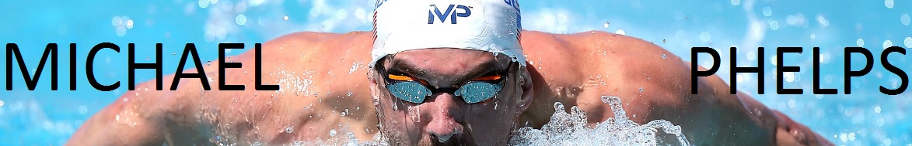
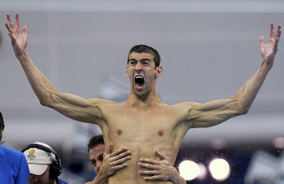
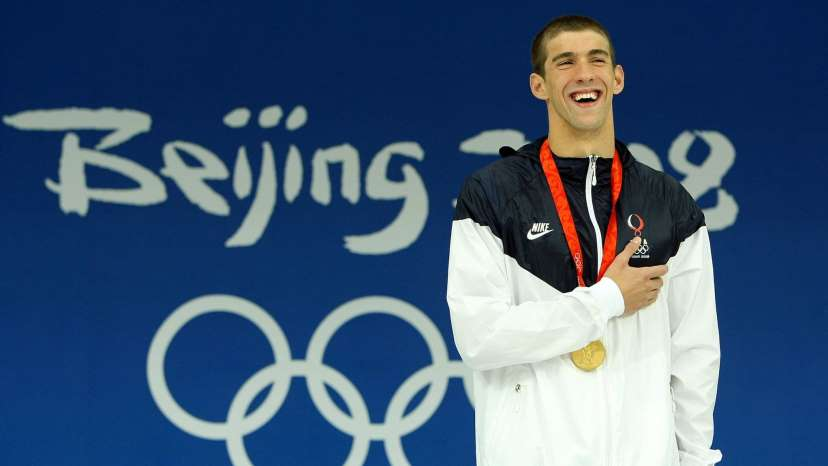
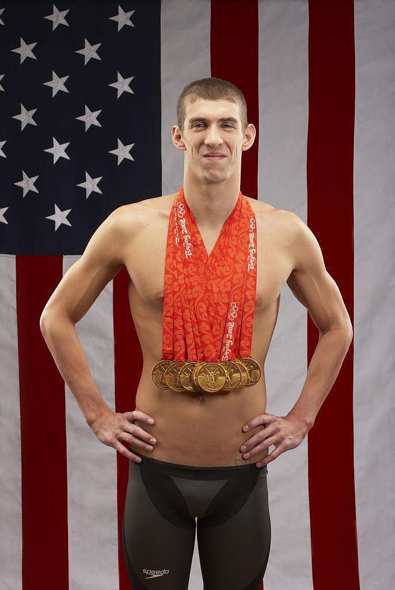
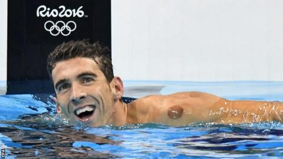
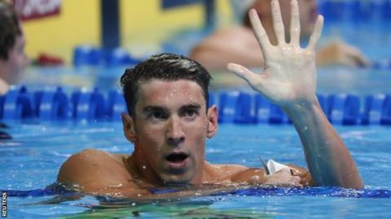
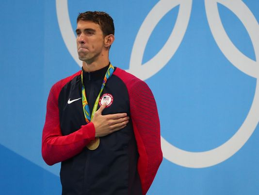

|  |
Michael Phelps (Baltimore, Maryland, 30 de junio de 1985) es un nadador estadounidense y el deportista olímpico más condecorado de todos los tiempos, con un total de 28 medallas. Phelps también posee los récords de más medallas olímpicas de oro (23), más medallas de oro en eventos individuales (13) y más medallas olímpicas en eventos masculinos (15).
En los Juegos Olímpicos de Pekín 2008, tras ganar ocho medallas de oro, Phelps se consagró como el máximo medallista de oro en una sola edición de los juegos. Cinco de esas medallas fueron en eventos individuales, igualando el récord de Eric Heiden y Vitaly Scherbo como múltiples medallistas de oro en eventos individuales en una sola edición. En los Juegos Olímpicos de Londres 2012, Phelps ganó cuatro medallas de oro y dos de plata, convirtiéndose en el deportista con más medallas de los juegos por tercera vez consecutiva.
Phelps es el plusmarquista mundial en piscina larga de los 100 y 200 metros mariposa, y los 400 metros combinado, como también explusmarquista mundial de los 200 metros libre y combinado. Ganó un total de 73 medallas en las grandes competiciones mundiales en piscina larga: 59 oros, 11 platas y 3 bronces, en lo que incluye Juegos Olímpicos, Campeonato Mundial y el Campeonato Pan-Pacífico. Los títulos y récords de Phelps le han permitido ser reconocido como Nadador del año en seis ocasiones y Nadador Americano del año en ocho ocasiones. Su actuación olímpica en 2008 le valió el premio Deportista del año otorgado por la revista Sports Illustrated. Y es considerado el mejor nadador de todos los tiempos.
Después de los Juegos Olímpicos de 2008, Phelps inició la Fundación Michael Phelps, concentrada en el desarrollo de la natación y promoviendo estilos de vida saludables.
Phelps ganó seis medallas de oro y dos de bronce en 2004 luego de competir en ocho pruebas: 200 metros libres, 100 metros y 200 metros mariposa, 200 y 400 metros estilos, 4x100 metros libres, 4x100 metros estilos y 4x200 metros estilos.
| Phelps logró el reto de obtener 8 medallas de oro en los eventos de natación en los Juegos Olímpicos de Beijing 2008. Phelps superó el récord mundial impuesto por Mark Spitz al ganar ocho medallas de oro en los Juegos Olímpicos de Pekín 2008. Según un estudio de ESIrg (Economics, Sport and Intangibles) de la Universidad de Navarra, Michael Phelps fue el rey mediático de los Juegos Olímpicos de Beijing 2008, por el número de noticias generadas en todo el mundo.   |
 |
Michael Phelps ganó cuatro medallas de oro (200 estilos, 100 mariposa,4×200 libre y 4×100 estilos), dos platas (200 mariposa y 4×100 libre) y quedó cuarto en los 400 estilos.
| Si bien había anunciado su retiro para después de Londres 2012, volvió a competir en Río 2016. Phelps ganó cinco medallas de oro (200 m. Mariposa, 200 m. Estilos, 4x100 m. y 4x200 m. libre y 4x100 m. Estilos) y una medalla de plata en los 100 m. Mariposa. Está considerado el mejor nadador de la historia y es el único deportista que tiene 22 medallas de oro olímpicas.    |
| Si desea volver a la página principal haz clic aquí |